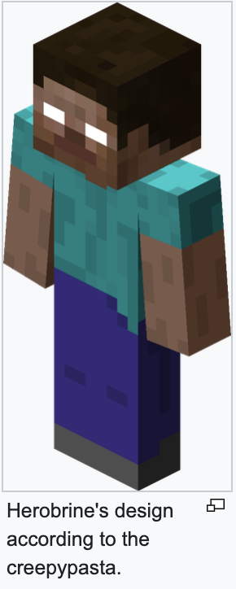
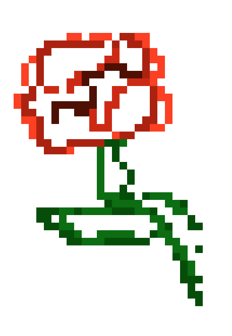

So… you’ve heard the name. Herobrine. The one Mojang “removed” in every update.
The one players swear they saw in the fog, just standing there, watching.
Maybe you don’t believe it. Maybe you’ve seen him yourself. Either way, welcome.
You’re in the right place

BACK IN 2010, ASIMPLE FORUM POST LIT THE SPARK. A PLAYER CLAIMED THEY SAW SOMETHING STRANGE IN THEIRWORLD! A STEVE-LIKE FIGURE IN THE DISTANCE.
THEY CHASED HIM, BUT HE DISAPPEARED. THE SCREENSHOTS WERE BLURRY, THE DETAILS VAGUE, BUT THE NAME STUCK: HEROBRINE.
IT STARTED WITH WHISPERS:SCREENSHOTS ON FORUMS,LATE-NIGHTPOSTS,AND THECLASSIC CREEPYPASTA THAT MADE US ALL DOUBLE-CHECK OUR CAVES. HE
WAS SAID TO DIG TUNNELS, MOVE BLOCKS, STARE FROM THE TREES WITH HIS
EMPTY WHITE EYES. MINECRAFT HAS NO STORY, BUT SOMEHOW HEROBRINE
BECAME OURS..... A GHOST HIDING IN THE CODE, A SECRET MOJANG NEVER WANTED US TO KNOW.
WHY DID WE BELIEVE?
Because it was too good not to believe. Minecraft’s world is massive, silent, and full of surprises.
When someone said there was something lurking in the dark, we wanted it to be true.
The glitchy screenshots, the eerie fog, the random sounds at night.
they made the story feel alive. And honestly? We loved being a little spooked.
Herobrine started as a spooky rumor in Minecraft lore. Here, we flip the script: he’s a conversation starter,
a symbol of curiosity, and a reminder that online legends can bring people together.
Posted by: Deleted User
Last Edited: 23 August 2010
I was mining alone in a new world. Nothing unusual at first.
Then I saw him standing in the fog. Just standing there. When I moved closer, he vanished.
I checked the logs, I was the only player on the server. That shouldn't be possible

Community Stories;
The Torch Giver
Mining in a cave with 2 torches left, I saw two white pixels in the dark.
When I turned, a chest had appeared at the bend: “For brave miners.” Inside—64 torches. Thanks, H. —@QuartzCat
The Crop Circle
Woke up on the server to find my wheat replanted into a heart.
Sign said: “Hydrate your farmers.” Barrels of water nearby. —@BeeKeeper
The Lost Dog
My wolf disappeared. Next day, a glow outlined the forest path to a tiny spruce hut.
My dog was inside with a bell and a note: “Every good boy finds home.” —@EnderNoodle
The Crop Circle
Woke up on the server to find my wheat replanted into a heart.
Sign said: “Hydrate your farmers.” Barrels of water nearby. —@BeeKeeper